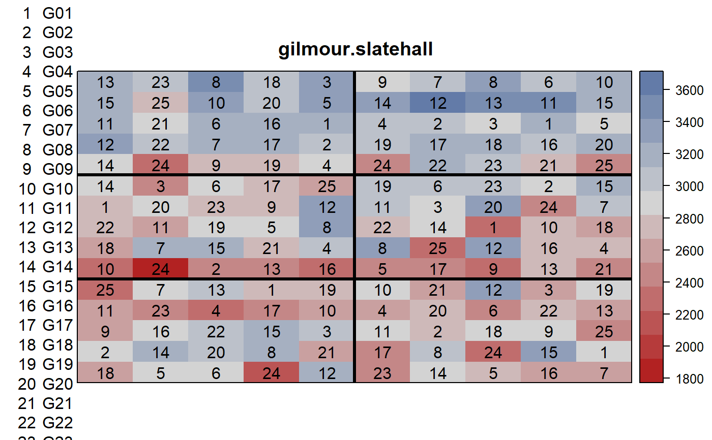
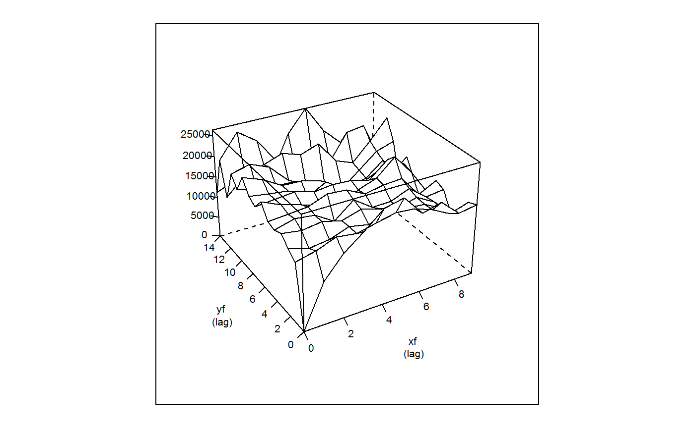

gilmour.slatehall.RdYields for a trial at Slate Hall Farm in 1978.
A data frame with 150 observations on the following 5 variables.
rowrow
colcolumn
yieldyield (grams/plot)
gengenotype factor, 25 levels
reprep factor, 6 levels
The trial was of spring wheat at Slate Hall Farm in 1978. The experiment was a balanced lattice with 25 varieties in 6 replicates. The 'rep' labels are arbitrary (no rep labels appeared in the source data). Each row within a rep is an incomplete block. The plot size was 1.5 meters by 4 meters.
Field width: 10 plots x 4 m = 40 m
Field length: 15 plots x 1.5 meters = 22.5 m
Arthur R Gilmour and Brian R Cullis and Arunas P Verbyla (1997). Accounting for natural and extraneous variation in the analysis of field experiments. Journal of Agricultural, Biological, and Environmental Statistics, 2, 269-293. http://doi.org/10.2307/1400446
None.
# \dontrun{ library(agridat) data(gilmour.slatehall) dat <- gilmour.slatehall libs(desplot) desplot(dat, yield ~ col * row, aspect=22.5/40, num=gen, out1=rep, cex=1, main="gilmour.slatehall")# ---------------------------------------------------------------------------- libs(asreml,lucid) if( utils::packageVersion("asreml") < "4") { # asreml3 # Model 4 of Gilmour et al 1997 dat <- transform(dat, xf=factor(col), yf=factor(row)) dat <- dat[order(dat$xf, dat$yf), ] m4 <- asreml(yield ~ gen + lin(row), data=dat, random = ~ dev(row) + dev(col), rcov = ~ ar1(xf):ar1(yf)) # coef(m4)$fixed[1] # linear row # [1] 31.72252 # (sign switch due to row ordering) vc(m4) ## effect component std.error z.ratio constr ## dev(row) 20290 10260 2 pos ## dev(col) 2519 1959 1.3 pos ## R!variance 23950 4616 5.2 pos ## R!xf.cor 0.439 0.113 3.9 uncon ## R!yf.cor 0.125 0.117 1.1 uncon plot(variogram(m4), main="gilmour.slatehall") } # ---------------------------------------------------------------------------- libs(asreml,lucid) if( utils::packageVersion("asreml") > "4") { # asreml4 # Model 4 of Gilmour et al 1997 dat <- transform(dat, xf=factor(col), yf=factor(row)) dat <- dat[order(dat$xf, dat$yf), ] m4 <- asreml(yield ~ gen + lin(row), data=dat, random = ~ dev(row) + dev(col), resid = ~ ar1(xf):ar1(yf)) # coef(m4)$fixed[1] # linear row # [1] 31.72252 # (sign switch due to row ordering) vc(m4) ## effect component std.error z.ratio bound ## dev(col) 2519 1959 1.3 P 0 ## dev(row) 20290 10260 2 P 0 ## xf:yf(R) 23950 4616 5.2 P 0 ## xf:yf!xf!cor 0.439 0.113 3.9 U 0 ## xf:yf!yf!cor 0.125 0.117 1.1 U 0 plot(varioGram(m4), main="gilmour.slatehall") }#> Model fitted using the gamma parameterization. #> ASReml 4.1.0 Thu Jul 30 15:49:29 2020 #> LogLik Sigma2 DF wall cpu #> 1 -733.509 30064.20 124 15:49:30 0.0 #> 2 -725.011 26801.71 124 15:49:30 0.0 #> 3 -718.953 25508.52 124 15:49:30 0.0 #> 4 -716.764 24942.33 124 15:49:30 0.0 #> 5 -716.202 24265.54 124 15:49:30 0.0 #> 6 -716.167 23974.18 124 15:49:30 0.0 #> 7 -716.166 23946.12 124 15:49:30 0.0# }